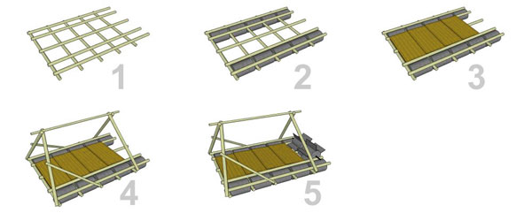

In current scenario construction of a building has to be completed within framed time or on time which means the building is more energy efficient. To control and manage a construction project a good quality drawing plays an important role. Apart from this the fundamental means of communication among ARCHITECTS, CLIENTS and BUILDERS are 2D and 3D drawings, which means that the drawings has to be an error free with enough details. The highly experienced process oriented Architects, Civil / Structural Engineers, Quantity surveyors, MEP (HVAC, ELECTRICAL, PLUMBING) Engineers with help of various latest software delivers a high quality synergized drawings. Various drawings of the same structure to meet different needs are made.
Good pre-planning can make a project run very smoothly. Apart from a model, drawings and an equipment list, a construction sequence drawing can be useful.
The point of this drawing is to plan when work needs to be done, which will help you identify the number of people needed for each task, and also find out which tasks need to wait for other tasks before they can be done.
For example, a large gateway might consist of two towers with a bridge between them. Doing a construction sequence drawing will help you see that there are two towers that can be built at the same time by two teams, and that the bridge between can only be built once the two towers are complete.

BIM provides the potential for a virtual information model to be handed from Design Team (architects, surveyors, consulting engineers and others) to Contractor and Subcontractors and then to the Owner, each adding their own additional discipline-specific knowledge and tracking of changes to the single model. This allows everyone involved in the building lifecycle – architects, engineers, contractors, developers, and building owners - to sync together allowing them to view the model in different ways and seamlessly share information.
Following are the key benefits of BIM:
A finished building never corresponds exactly to the original plans in every detail. This normally occurs because of unforeseeable on-site complications and variations from the original plans. Sometimes such discrepancies may occur accidentally and may be economically unfeasible to rectify. The purpose of as-built measurement is to record these variations.
How as-built measuring can benefit you:
By utilizing Laser Technology and advanced equipment linked to the latest supporting software, Premium Urban Design records all these variations and converts them into the most accurate and advanced as-built drawings.
With the current Information Technology we redefine practice of an Architect. Information Technology enables WORK SHARE process between Architectural firm and us. An Architect or an Architectural firm develops concept design (even basic sketch), with that design development, schedule of quantities, working drawings, detailing 3D images and 3D animations will be done by us. With highly experienced and skilled architects we also do concept designs.
Green building (also known as green construction or sustainable building) refers to a structure and using process that is environmentally responsible and resource-efficient throughout a building's life-cycle: from siting to design, construction, operation, maintenance, renovation, and demolition.
A green building is one which uses less water, optimises energy efficiency, conserves natural resources, generates less waste and provides healthier spaces for occupants as compared to a conventional building. It is based on accepted energy and environmental principles and strikes a balance between known established practices and emerging concepts. The system is designed to be comprehensive in scope, yet simple in operation.
A Green Building can have tremendous benefits, both tangible and intangible. The immediate and most tangible benefit is in the reduction in water and operating energy costs right from day one, during the entire life cycle of the building.
Goals of Green Building:
The essence of green building is an optimization of one or more of the above principles. Also, with the proper synergistic design, individual green building technologies may work together to produce a greater cumulative effect. It is the philosophy of designing a building that is in harmony with the natural features and resources surrounding the site.